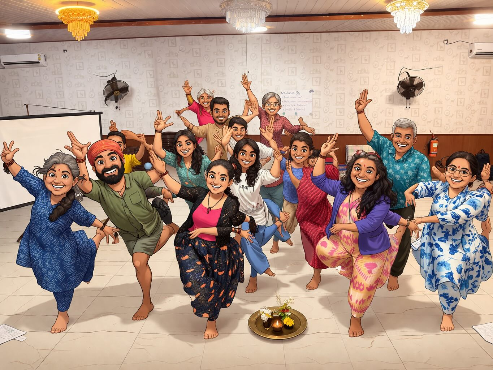

How this came to be
All the rooms inside the app, the cohort it's built with, and the infamous blue file that started it. ← Back to home
Built alongside Vikram's Astrology 101 cohort at allthingsvedic.in. Vikram has reviewed it; the cohort is now invited in. — Sree & Sanchi · alongside the class
What should we call you? It helps us nudge you by name where it counts — and stays only on this device.
Every door inside, with your why
Beyond the three rooms on home, these are the deeper peer pages. Pick the door that matches the reason you came in today.
The biggest page. Tap any tile — sign, planet, house, avatar — and a drawer opens.
Watch Vikram's planetary court assemble. Story · Storybook · Court mode.
Eleven prompts per avatar. Notes auto-save in your browser.
The kundali laid into Vishnu's body — head to feet, sign by sign.
Ecliptic, ayanamsha, eclipses. The mechanism, not just the meaning.
Mercury seen as friend, neutral, enemy — and how to read it in your own chart.
Notes from Chidambaram. Nirvana Shatakam. The great secret.
The longer arc — month by month, layer by layer.
Pick your Lagna, place your planets, see the South Indian chart. Walk-through (Sudha's pedagogy — house by house) lands next.
Earth · Water · Fire · Air · Ether — each with one or two practices Vikram recommends for embodying it.
The infamous blue file

Every time I had to refer to astrology, I'd reach for my infamous blue file — a binder of printouts — or the iPad with all the PDFs. In a jiffy, if I wanted to find a specific piece of information, it was impossible.
I don't learn by memory. I need a lot of references all the time. I needed something pocket-friendly and handy — something I could open up and remember, or search.
That was the genesis. But it also coincided with something deep — something touching and resonating for me. I'm still yet to understand why I have a deep calling in this path. But I am in a flow, and that's what matters, right?
Read the longer arc — Layers →
— Sree
The class is more than the teacher
A frame from the Ether retreat — Vikram's Astrology 101 cohort. The class is more than the teacher; the page is what it is because of this group.
In this picture Meera · Rashmi · Sudha · Sathvi · Apri · Anil · Kanika · Shashank · Aditya · Kiron · Shobhana — and Sanchi, partner in crime on this project.
Co-facilitating with Vikram Suraj · Megha.
The larger learning group Not all in this frame, but in the conversations: Aysha · Marie · Shweta · Sarika · Kajal · Surbhi — and more.
Mentors who shaped the path Divya · Siva · Shivangi · Shruthi. And the list goes on.
Vikram has been the teacher; this group has been the second teacher — every catch, every question, every "wait, that doesn't sound right" landed inside the page.

❝I owe a lot to this group. — Sree
Three places to start
Tap any sign tile — a drawer opens showing how it connects to its planet, element, and house. The cross-reference pattern that everything else uses.
Vikram's story of the planets as a royal court — King, Queen, Commander, Prince, Princess, Priest, Servant. With a Court Call game inside.
Embodied recall — draw the planet glyphs by hand on a small canvas. Forty seconds each. The way the symbols stick.
- The Twelve Signs · Rāśi Chakra
- Elements · Modes · Duality
- The Daśāvatāra · ten avatars
- The Planetary Cabinet
- The Nine Planets · Navagrahas
- The Signature · Lagna · Moon · Sun
- Planetary Relationships
- Aspects · Drishti
- Yogas · Combinations
- The Twelve Houses · Bhāvas
- House Systems
- House Categories
- Purusharthas — Aims of Life
- Kālapurusha — the cosmic body
- Practice — flashcards · quizzes · trace
- The Companion Workbook
Free, no signup. Phone or laptop. Tap the 💬 button at the bottom of any page to send feedback over WhatsApp.